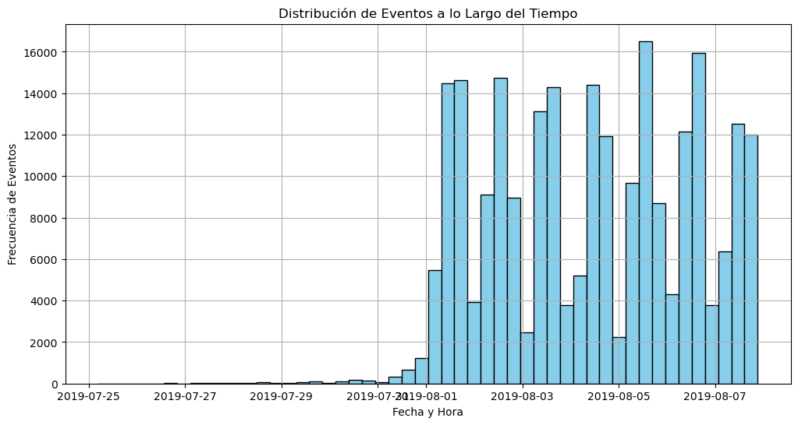
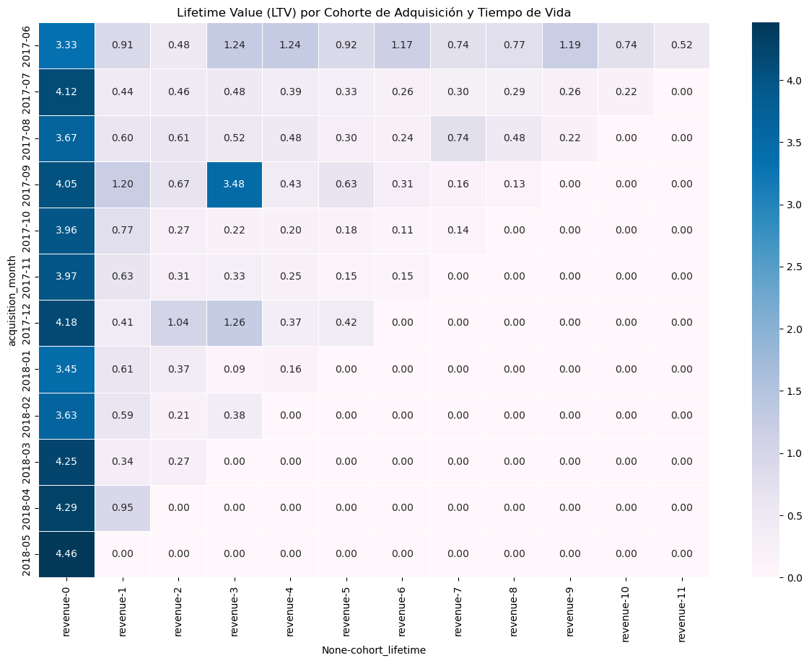
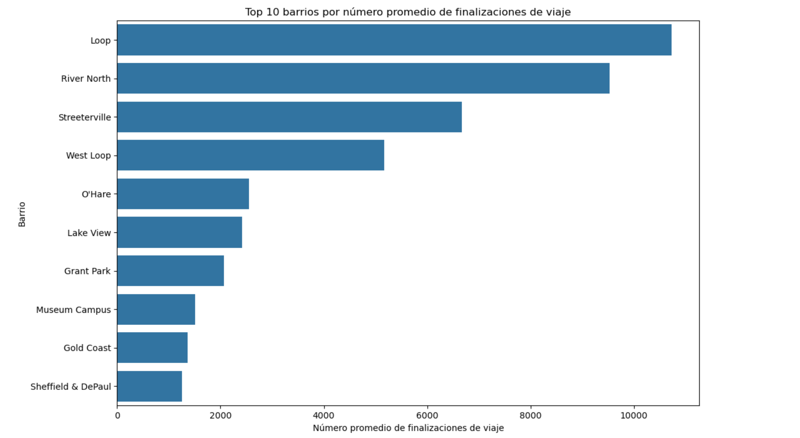

Acerca de mí
Soy un Data Analyst Jr especializado en Business Intelligence y Revenue Analytics. Mi enfoque se centra en transformar datos en información útil para apoyar la toma de decisiones empresariales.
Actualmente desarrollo proyectos utilizando Python, SQL y herramientas de análisis de datos para comprender el comportamiento de usuarios, optimizar procesos y detectar oportunidades de negocio mediante análisis exploratorio de datos, experimentación y análisis estadístico.
Habilidades Técnicas
Proyectos

conversion-funnel-ab-testing-food-startup
Análisis de embudo de conversión y validación estadística de un experimento A/B para evaluar cambios en el comportamiento de usuarios dentro de una aplicación.

Análisis de priorización de hipótesis para optimización de producto digital
Evaluación y priorización de hipótesis utilizando frameworks ICE y RICE para apoyar decisiones de producto basadas en datos.

Análisis de comportamiento de usuarios y optimización de inversión en marketing
Análisis de adquisición de usuarios mediante cohort analysis para evaluar el rendimiento de distintos canales de marketing.

Análisis de patrones de comportamiento de usuarios en plataforma de ride-sharing
Exploración de datos de viajes para identificar patrones de uso del servicio y comprender la distribución de la demanda.
Métricas de GitHub
Contacto
Si te interesa conocer más sobre mis proyectos o colaborar en análisis de datos puedes escribirme a:
Email: j.alfredo.gn1@gmail.com